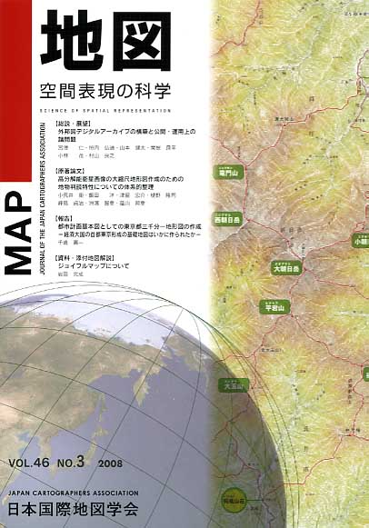
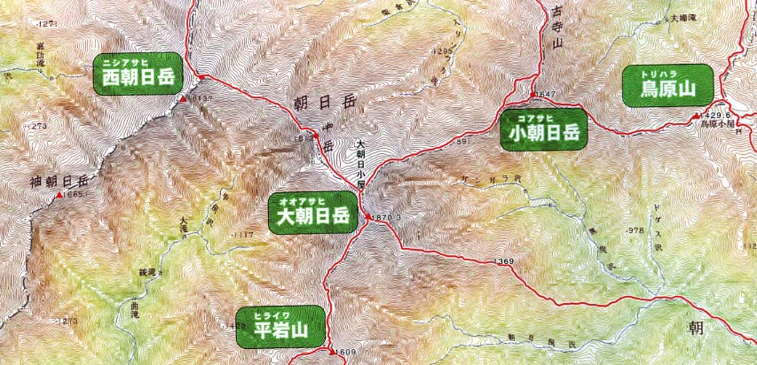

| 最 新 号 | バックナンバー | 添付地図目録 | 投 稿 規 程 |
Vol.46 No.3 （通巻１８３号） ２００８年
| 【総説・展望】 | 外邦図デジタルアーカイブの構築と公開・運用上の諸問題 | 宮澤 仁・照内弘通・山本健太・関根良平・小林 茂・村山良之 |
| キーワード：外邦図、デジタル画像化、デジタルアーカイブ、インターネット公開 | ||
| 【原著論文】 | 高分解能衛星画像の大縮尺地形図作成のための地物判読特性についての体系的整理 | 小荒井衛・飯田 洋・津留宏介・樋野隆司・峰島貞治・洲濱智幸・蔭山邦幸 |
| キーワード：高分解能衛星画像、判読特性、大縮尺地形図作成、IKONOS、QuickBird | ||
| 【報告】 | 都市計画基本図としての東京都三千分一地形図の作成−経済大国の首都東京形成の基礎地図はいかに作られたか− | 千歳壽一 |
| キーワード：縮尺3000分の1地形図、東京都、都市計画 | ||
| 【資料・添付地図解説】 | ジョイフルマップについて | 岩田完成 |
| 【特別会員のページ】 | アジア航測 | |
| 人文社 | ||
| 【学会記事】 | 日本国際地図学会機関誌「地図」投稿規程及び投稿原稿執筆の手引き | |
| 【添付地図】 | ジョイフルマップ「朝日連峰」 | |
|
≪No.46 No.3 表紙≫ |
|
|  |
|
|
|
≪No.46 No.3 添付地図−抜粋≫ |
| 
本図を許可なく複製・利用することを禁止します。
|